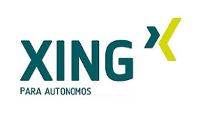

Redes Horizontales
¿Que son?
Las redes sociales horizontales son plataformas digitales diseñadas para que cualquier persona sin importar edad, profesión, intereses o nivel de conocimiento pueda registrarse, interactuar y compartir contenido.
Se les llama horizontales porque no están enfocadas en una temática concreta, sino que abarcan una gran variedad de temas, gustos y actividades.
Su objetivo principal es facilitar la comunicación global, conectar a personas de diferentes contextos y permitir la creación de comunidades amplias y diversas.
En estas redes, los usuarios pueden publicar casi cualquier tipo de contenido: desde fotos personales, videos, memes y opiniones, hasta información educativa o noticias. Esto les da un carácter universal,
convirtiéndolas en las plataformas con mayor cantidad de usuarios en el mundo.
Características ampliadas
1. Público general y diverso
Las redes horizontales no están dirigidas a un grupo específico. En ellas conviven adolescentes, adultos, profesionales, artistas, empresas, instituciones, etc.
2. Contenido ilimitado y variado
- Fotos y videos
- Historias o estados
- Textos largos y cortos
- Enlaces a sitios web
- Transmisiones en vivo
Esto hace que el flujo de contenido sea muy diverso.
3. Alto nivel de socialización
Se basan en la interacción constante:
- Comentarios
- Reacciones
- Mensajes directos
- Compartir publicaciones
- Participar en grupos o comunidades
4. Gran alcance y visibilidad
Debido a la cantidad de usuarios, la información puede difundirse rápidamente. Por eso estas redes son usadas por:
- Empresas
- Gobiernos
- Creadores de contenido
- Organizaciones
- Medios de comunicación
5. Funcionan como plataformas multifuncionales
En una misma red puedes:
- Socializar
- Informarte
- Publicitar productos
- Realizar compras (en algunos casos)
- Ver o crear entretenimiento
Ejemplos detallados de redes sociales horizontales

Permite crear perfiles personales, páginas, grupos, eventos, enviar mensajes, publicar videos, etc.
Es una de las redes más completas y masivas.

Aunque comenzó orientada a la fotografía, se ha convertido en una plataforma múltiple:
fotos, reels, historias, mensajería, venta de productos, etc.
X (antes Twitter)

Espacio para compartir ideas, noticias, debates y contenido multimedia.
Su enfoque directo hace que sea una red de comunicación masiva.
TikTok

Aunque se centra en videos cortos, su contenido es tan diverso que también se considera horizontal:
humor, educación, cocina, noticias, tendencias, etc.
Profesionales
¿Qué son las redes sociales profesionales?
Las redes sociales profesionales son plataformas en línea diseñadas para ayudar a las personas a construir su marca personal, establecer conexiones laborales y hacer crecer su carrera profesional. A diferencia de las redes sociales generales (como Facebook, Twitter, Instagram), las redes sociales profesionales están orientadas hacia el ámbito laboral, el intercambio de conocimientos y la creación de oportunidades de negocio o empleo.
Estas plataformas permiten a los usuarios mostrar su experiencia profesional, compartir conocimientos e interactuar con otros en un contexto más serio y especializado. Muchas de estas redes también están diseñadas para ayudar a los reclutadores a encontrar candidatos calificados, y a los profesionales a buscar oportunidades de empleo, formación, o incluso colaboraciones de negocio.
Estas son las aplicaciones profesionales mas conocidas:
1. LinkedIn

- Perfil profesional:Puedes crear un perfil donde se incluyen tus estudios, experiencias laborales, habilidades y logros.
- Conexiones:Puedes agregar colegas, reclutadores, líderes de la industria y otros profesionales. Además, puedes seguir a empresas, grupos o influencers de tu sector.
- Red de contactos:El objetivo principal de LinkedIn es la creación de redes. Te permite conectar con personas en tu campo laboral o en áreas afines y recibir recomendaciones o referencias.
- Contenido profesional:Puedes compartir artículos, noticias, actualizaciones profesionales, o incluso publicaciones de tus proyectos.
| Ventajas | Desventajas |
|---|---|
| Red de contactos global:Es la plataforma profesional más grande del mundo, lo que te permite conectar con profesionales de cualquier parte del planeta. | Competencia elevada:Al ser tan popular, LinkedIn está saturado de profesionales de todos los niveles, lo que hace que destacar entre tantos perfiles sea un desafío. |
| Visibilidad laboral:Te permite crear un perfil detallado con tus experiencias, habilidades, y logros, lo que aumenta tus posibilidades de ser descubierto por reclutadores o empleadores. | Demasiado formal:El tono en LinkedIn tiende a ser muy profesional, lo que puede hacer que algunas interacciones se sientan poco naturales o demasiado corporativas. |
2. Xing
- Red de contactos profesionales:Similar a LinkedIn, te permite construir un perfil profesional, pero tiene un enfoque más fuerte en mercados de habla alemana.
- Oportunidades laborales:Las empresas de Europa central frecuentemente publican ofertas de empleo, especialmente en Alemania, donde Xing es más popular.
- Eventos y grupos:Puedes unirte a grupos y participar en eventos de la industria.
| Ventajas | Desventajas |
|---|---|
| Popularidad en Europa:Es especialmente fuerte en países de habla alemana (Alemania, Austria, Suiza), por lo que es ideal si estás buscando establecer contactos en esa región. | Poca penetración fuera de Europa:Si no estás en Europa o no tienes interés en trabajar allí, Xing tiene una presencia limitada comparado con plataformas globales como LinkedIn. |
| Conexión con empresas locales:Muchas empresas en Europa prefieren usar Xing para reclutar, por lo que estar en la plataforma te ofrece una buena oportunidad de entrar en contacto con empleadores locales. | Interfaz menos intuitiva:La plataforma puede sentirse un poco más anticuada y menos amigable para los usuarios comparado con LinkedIn. |
De Contenido Multimedia
¿Qué son las redes sociales de contenido multimedia?
Las redes sociales de contenido multimedia son plataformas digitales diseñadas para que las personas compartan y consuman principalmente imágenes, videos, audios y transmisiones en vivo. A diferencia de las redes centradas en el texto, estas aplicaciones se basan en lo visual y lo auditivo para comunicar y atraer la atención. Su objetivo es permitir que los usuarios se expresen de manera más creativa mediante fotos, clips, música, filtros, efectos y herramientas de edición. Además, facilitan la interacción social a través de comentarios, me gusta, reacciones y la posibilidad de compartir contenido con otros usuarios.
En estas redes, las publicaciones suelen organizarse en un feed o muro, así como en formatos específicos como stories, transmisiones en directo, reels o videos cortos. Los algoritmos de la plataforma recomiendan contenido según los intereses y el comportamiento de cada persona, lo que ayuda a descubrir nuevas cuentas, temas o tendencias.
Entre las redes de contenido multimedia más populares se encuentran Instagram, orientada a fotos y videos; TikTok, enfocada en videos cortos y creativos; YouTube, especializada en videos largos y directos; Snapchat, con contenido efímero; Twitch, centrada en transmisiones en vivo; y Pinterest, basada en imágenes inspiracionales. Todas ellas permiten crear comunidades, compartir ideas, entretener, educar o promocionar productos y servicios mediante contenido visual y sonoro.
1. YouTube
- Plataforma de videos largos y cortos (Shorts).
- Ofrece transmisiones en vivo.
- Permite monetización con anuncios y membresías.
- Ideal para tutoriales, vlogs, documentales, cursos y más.
- Motor de búsqueda interno muy potente.
- Comunidad global activa y variada.
2. TikTok
- Algoritmo potente:Prioriza contenido basado en la interacción del usuario, lo que puede hacer que un video se vuelva viral rápidamente.
- Filtros y efectos visuales:Amplia gama de herramientas para mejorar la creatividad
- Propósito:Entretenimiento rápido, creatividad, viralidad, tendencias.
3. Pinterest
- Descubrimiento visual:nspiración en temas como moda, decoración, viajes, recetas, etc.
- Enlaces:La mayoría de los pins redirigen a sitios web, lo que lo convierte en una plataforma útil para tráfico web.
- Propósito:Inspiración visual, planificación de proyectos, compras y marketing.
De Nicho
Foros, sitios de citas